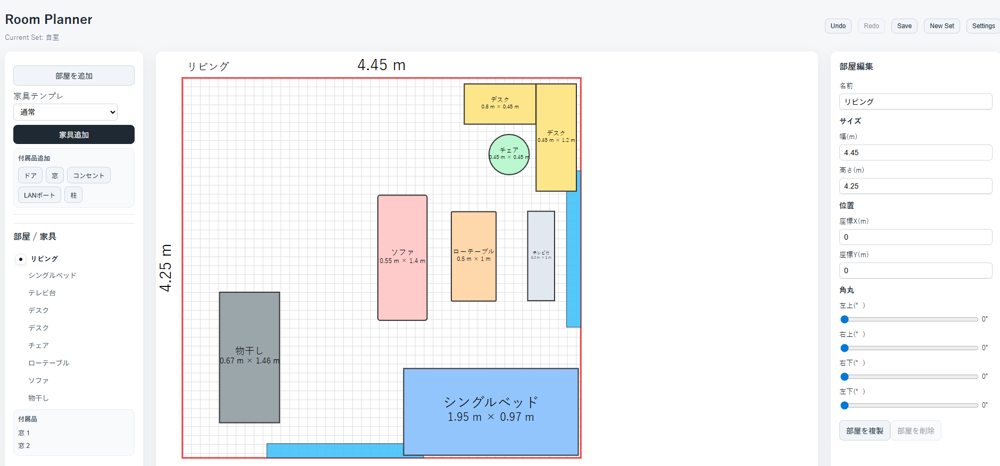
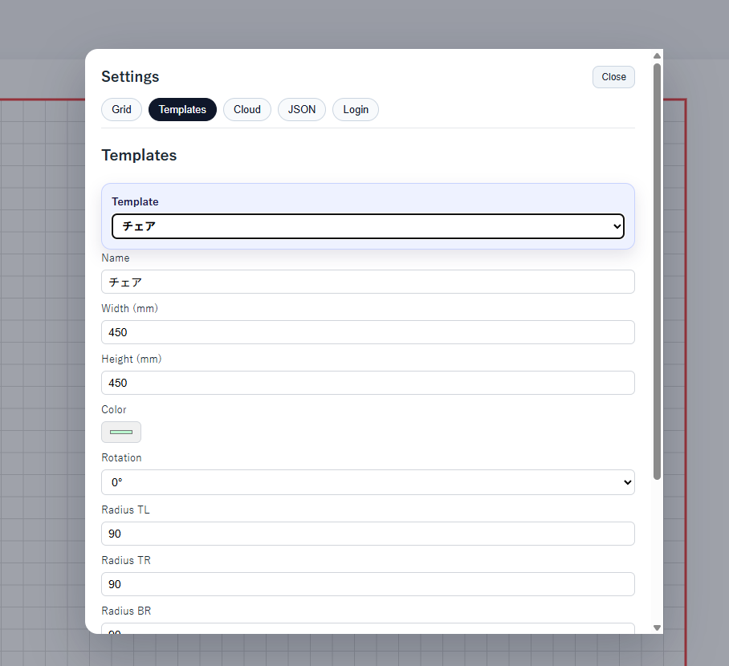
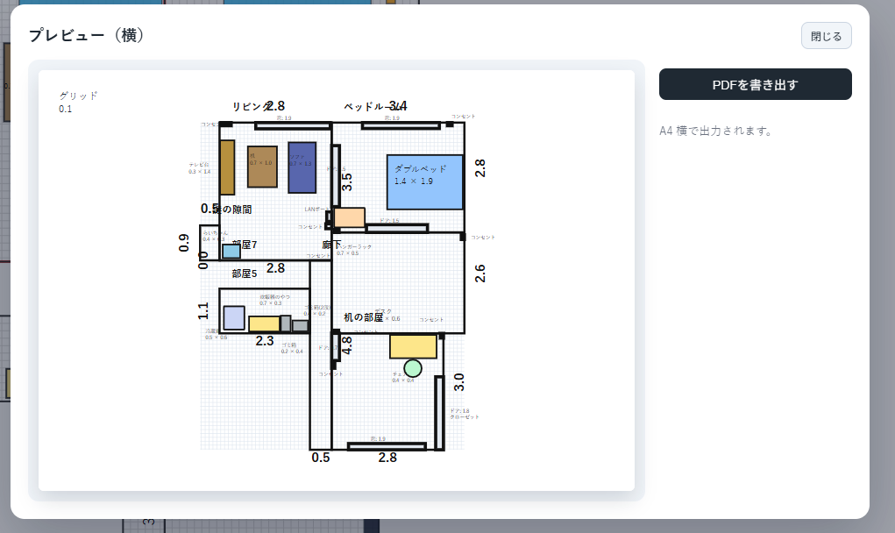

OVERVIEW
概要
RoomPlanner は、部屋の広さや家具のサイズを入力しながら、 実際の配置をシミュレーションできるWebアプリです。 部屋・家具・付属品を画面上で編集し、レイアウトの検討や保存ができるようにしています。
BACKGROUND
作ろうと思った背景
部屋の家具配置を考えるとき、寸法や位置関係を頭の中だけで整理するのは難しく、 実際に置いてみる前にシミュレーションできるツールがあると便利だと感じました。
そこで、部屋のサイズや家具の大きさを入力しながら、 視覚的に配置を確認できるレイアウトツールとして制作しました。
PROBLEM
解決したい課題
家具配置をイメージしづらい
家具のサイズや部屋の広さを数字だけで見ても、実際の位置関係を把握しづらい課題がありました。
細かい設備も含めて考えたい
ドアや窓、コンセント、LANポート、柱なども含めて配置を考えられるようにしました。
作ったレイアウトを保存したい
一度作った配置を後から見直せるように、保存や読み込みの仕組みを取り入れました。
SOLUTION
主な機能
部屋の編集
部屋名・幅・高さ・座標などを編集し、複数の部屋を扱えるようにしています。
家具の配置・編集
家具の名前、色、サイズ、位置、回転、角丸などを編集できるようにしています。
付属品の追加
ドア、窓、コンセント、LANポート、柱などを部屋に追加し、実際の部屋に近い条件で検討できます。
保存・読み込み
JSON形式でレイアウトを書き出し・読み込みできるほか、ログイン時のクラウド保存にも対応しています。
FLOW
使い方の流れ
- 部屋を追加し、サイズを設定
- 家具テンプレートや家具を追加
- ドア・窓・コンセントなどの付属品を配置
- 画面上で位置やサイズを調整
- JSON出力やクラウド保存でレイアウトを保存
TECHNICAL POINTS
技術的なポイント
SVGによるレイアウト表示
部屋や家具をSVG上に描画し、サイズ・位置・回転を反映しながら視覚的に編集できるようにしました。
ドラッグ・リサイズ操作
家具や部屋をマウス操作で移動・調整できるようにし、直感的に配置を変更できるようにしています。
JSONインポート / エクスポート
レイアウト情報をJSONとして保存・復元できるため、ファイルとして管理しやすい構成にしています。
印刷・共有を意識した出力
A4出力プレビューやSVG書き出しを意識し、作った配置を見せやすい形に整えられるようにしています。
POINT
工夫した点
実寸に近い感覚で扱えるようにした
mmとmを変換しながら扱い、家具や部屋のサイズ感が分かりやすくなるようにしました。
編集パネルを分けて操作しやすくした
部屋・家具・付属品ごとに編集画面を分け、選択している対象に応じて必要な項目だけを表示しています。
モバイル表示も意識
画面幅が小さい場合でも操作できるように、一覧と編集を切り替えるモバイル用ドロワーを用意しています。
IMAGES
画面イメージ



LEARNING
この制作で得たこと
RoomPlanner の制作を通して、React上で複雑な編集状態を管理することや、 SVGを使った図形描画・ドラッグ操作・JSON入出力などを組み合わせたUI制作を経験しました。 また、ユーザーが実際に操作するツールでは、機能だけでなく編集しやすさや保存しやすさも重要だと感じました。